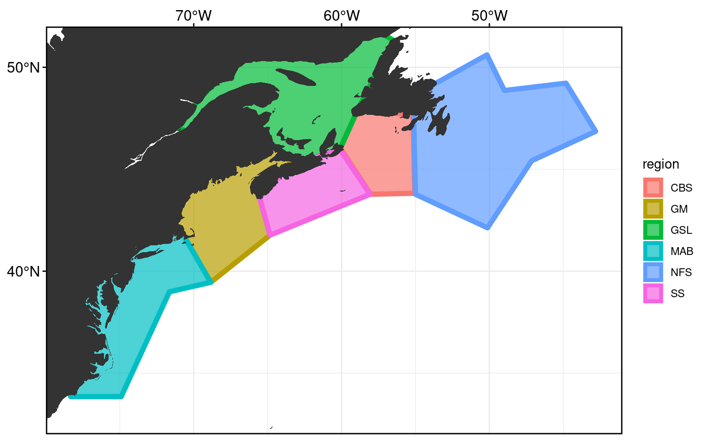

Preparing the data
Robert Schlegel
2020-02-25
Last updated: 2021-01-24
Checks: 7 0
Knit directory: MHWflux/
This reproducible R Markdown analysis was created with workflowr (version 1.6.2). The Checks tab describes the reproducibility checks that were applied when the results were created. The Past versions tab lists the development history.
Great! Since the R Markdown file has been committed to the Git repository, you know the exact version of the code that produced these results.
Great job! The global environment was empty. Objects defined in the global environment can affect the analysis in your R Markdown file in unknown ways. For reproduciblity it’s best to always run the code in an empty environment.
The command set.seed(666) was run prior to running the code in the R Markdown file. Setting a seed ensures that any results that rely on randomness, e.g. subsampling or permutations, are reproducible.
Great job! Recording the operating system, R version, and package versions is critical for reproducibility.
Nice! There were no cached chunks for this analysis, so you can be confident that you successfully produced the results during this run.
Great job! Using relative paths to the files within your workflowr project makes it easier to run your code on other machines.
Great! You are using Git for version control. Tracking code development and connecting the code version to the results is critical for reproducibility.
The results in this page were generated with repository version 6554bc8. See the Past versions tab to see a history of the changes made to the R Markdown and HTML files.
Note that you need to be careful to ensure that all relevant files for the analysis have been committed to Git prior to generating the results (you can use wflow_publish or wflow_git_commit). workflowr only checks the R Markdown file, but you know if there are other scripts or data files that it depends on. Below is the status of the Git repository when the results were generated:
Ignored files:
Ignored: .Rhistory
Ignored: .Rproj.user/
Ignored: data/ALL_anom.Rda
Ignored: data/ALL_other.Rda
Ignored: data/ALL_ts_anom.Rda
Ignored: data/ERA5_down.Rda
Ignored: data/ERA5_down_anom.Rda
Ignored: data/ERA5_evp_anom.Rda
Ignored: data/ERA5_lhf_anom.Rda
Ignored: data/ERA5_lwr_anom.Rda
Ignored: data/ERA5_mslp_anom.Rda
Ignored: data/ERA5_pcp_anom.Rda
Ignored: data/ERA5_qnet_anom.Rda
Ignored: data/ERA5_shf_anom.Rda
Ignored: data/ERA5_swr_MLD.Rda
Ignored: data/ERA5_swr_anom.Rda
Ignored: data/ERA5_t2m_anom.Rda
Ignored: data/ERA5_tcc_anom.Rda
Ignored: data/ERA5_u_anom.Rda
Ignored: data/ERA5_v_anom.Rda
Ignored: data/GLORYS_all_anom.Rda
Ignored: data/OISST_all_anom.Rda
Ignored: data/packet.Rda
Ignored: data/som.Rda
Ignored: data/synoptic_states.Rda
Ignored: data/synoptic_states_other.Rda
Untracked files:
Untracked: data/event_overlap_res.Rda
Note that any generated files, e.g. HTML, png, CSS, etc., are not included in this status report because it is ok for generated content to have uncommitted changes.
These are the previous versions of the repository in which changes were made to the R Markdown (analysis/data-prep.Rmd) and HTML (docs/data-prep.html) files. If you’ve configured a remote Git repository (see ?wflow_git_remote), click on the hyperlinks in the table below to view the files as they were in that past version.
| File | Version | Author | Date | Message |
|---|---|---|---|---|
| html | 57e2ce3 | robwschlegel | 2021-01-23 | Build site. |
| html | 76b55b6 | robwschlegel | 2020-12-21 | Build site. |
| Rmd | 949244e | robwschlegel | 2020-12-21 | Re-built site. |
| Rmd | c921da2 | robwschlegel | 2020-12-21 | Created Figure S3 to respond to a reviewers comments |
| html | 4a00400 | robwschlegel | 2020-12-21 | Build site. |
| Rmd | 0ab0ac6 | robwschlegel | 2020-12-21 | Re-built site. |
| html | 65f38bf | robwschlegel | 2020-12-21 | Build site. |
| Rmd | b742b28 | robwschlegel | 2020-12-21 | Re-built site. |
| html | 33f4595 | robwschlegel | 2020-11-10 | Build site. |
| html | a438235 | robwschlegel | 2020-11-10 | Build site. |
| Rmd | cbc5b74 | robwschlegel | 2020-11-10 | Re-built site. |
| Rmd | 2e73a82 | robwschlegel | 2020-11-05 | Changed how magnitude and RMSE calculations were made |
| Rmd | abed6b2 | robwschlegel | 2020-11-05 | Changing the way in which cumulative values are calculated |
| Rmd | fdc115c | robwschlegel | 2020-10-08 | Propogated the swr down values through the results |
| Rmd | 54144a7 | robwschlegel | 2020-09-28 | Working on non-numeric node labels |
| Rmd | d067646 | robwschlegel | 2020-09-24 | Update to magnitude shcematic and improved tables |
| Rmd | ab4326c | robwschlegel | 2020-09-03 | Some changes for the site to be re-built |
| html | 8d65758 | robwschlegel | 2020-09-03 | Build site. |
| Rmd | de9c829 | robwschlegel | 2020-09-01 | More work on follow up analyses |
| Rmd | 66f3736 | robwschlegel | 2020-08-26 | More edits to the figures |
| Rmd | d61c819 | robwschlegel | 2020-08-20 | The full range of SOM figures |
| Rmd | 6b15849 | robwschlegel | 2020-08-18 | More integration and optimisation of the code bases |
| Rmd | 84d1750 | robwschlegel | 2020-08-17 | Finished porting over the SOM code. Still needs thorough testing. |
| Rmd | b029400 | robwschlegel | 2020-08-15 | Re-calculated all of the base data |
| Rmd | 4b04d7a | robwschlegel | 2020-08-14 | Renamed some files in preparation for the file runs on the SOM sized data |
| Rmd | fd8772f | robwschlegel | 2020-08-13 | Finished new GLORYS processing |
| Rmd | 8da255f | robwschlegel | 2020-08-13 | Removed ERA5 grid and calculated the FNN match between the GLORYS and OISST grids |
| Rmd | 3fca8ac | robwschlegel | 2020-08-13 | Removed the OISST and GLORYS MHW comparison code |
| Rmd | f41bd24 | robwschlegel | 2020-08-12 | Experimenting with other NetCDF packages |
| Rmd | c0c599d | robwschlegel | 2020-08-12 | Combining the MHWNWA and MHWflux code bases |
| Rmd | 192c062 | robwschlegel | 2020-07-29 | Propogated some small fixes through the pipeline to the results. Updated the shiny app accordingly. |
| html | 9304ba0 | robwschlegel | 2020-07-21 | Build site. |
| Rmd | 49fd753 | robwschlegel | 2020-07-21 | Re-built site. |
| html | cf24288 | robwschlegel | 2020-07-17 | Build site. |
| html | ab06b94 | robwschlegel | 2020-07-14 | Build site. |
| Rmd | 8a8180f | robwschlegel | 2020-07-14 | Performed 12 hour nudge on Wx terns. Completed RMSE calculations, comparisons, and integration into shiny app. |
| Rmd | c5c1b35 | robwschlegel | 2020-07-14 | Working on RMSE code |
| Rmd | f4e6cf5 | robwschlegel | 2020-07-13 | Changed Qx units from seconds to days |
| Rmd | dfeee7a | robwschlegel | 2020-07-08 | Some notes from today’s meeting |
| Rmd | 8221586 | robwschlegel | 2020-07-08 | Updates to figures 2 and 3 |
| Rmd | 40247a1 | robwschlegel | 2020-06-12 | Shifted the SST from GLORYS to NOAA |
| html | 97d0296 | robwschlegel | 2020-06-02 | Build site. |
| html | 0634d98 | robwschlegel | 2020-06-02 | Build site. |
| html | c6087d9 | robwschlegel | 2020-06-02 | Build site. |
| Rmd | c839511 | robwschlegel | 2020-06-02 | Working back over some old thoughts |
| Rmd | 9e749bc | robwschlegel | 2020-05-28 | First pass at connecting the SOM results to the correlations |
| Rmd | 09ce925 | robwschlegel | 2020-05-20 | Some work on comparing the OISST and GLORYS MHWs. They are somewhat different… |
| Rmd | e837288 | robwschlegel | 2020-05-19 | A bunch of updates to the shiny app |
| html | 12b4f67 | robwschlegel | 2020-04-29 | Build site. |
| Rmd | bc4ee87 | robwschlegel | 2020-04-28 | Added more functionality to app. Added cloud coverage, speds, and precip-evap. |
| Rmd | 29eb557 | robwschlegel | 2020-04-27 | Much progress on shiny app |
| html | 7c04311 | robwschlegel | 2020-04-22 | Build site. |
| html | 99eda29 | robwschlegel | 2020-04-16 | Build site. |
| Rmd | e4b9586 | robwschlegel | 2020-04-16 | Re-built site. |
| Rmd | f963741 | robwschlegel | 2020-04-15 | Some text edits and published the shiny app |
| Rmd | d22d6a7 | robwschlegel | 2020-04-14 | Text edits |
| Rmd | 7c19a6f | robwschlegel | 2020-02-28 | Notes from meeting with Ke. |
| Rmd | b10501e | robwschlegel | 2020-02-27 | Working on correlation code |
| html | 50eb5a5 | robwschlegel | 2020-02-26 | Build site. |
| Rmd | 891e53a | robwschlegel | 2020-02-26 | Published site for first time. |
| Rmd | 1be0a1e | robwschlegel | 2020-02-26 | Completed the data prep for the project |
| Rmd | bcd165b | robwschlegel | 2020-02-26 | Writing |
| Rmd | 29883d6 | robwschlegel | 2020-02-26 | Calculated the MHWs from GLORYS data. Am now wrestling with the pipeline for ERA5 loading. |
| Rmd | c4343c0 | robwschlegel | 2020-02-26 | Pushing quite a few changes |
| Rmd | 80324fe | robwschlegel | 2020-02-25 | Adding the foundational content to the site |
Introduction
The purpose of this vignette is to walk through the steps taken to prepare the data from the NOAA OISST, ERA5, and GLORYS products for the following analyses. The statistical analyses may be found in the MHWs vs. heat flux vignette, and the SOM analysis may be found in the SOM vignette.
All of the libraries and functions used in this vignette, and the project more broadly, may be found here.
# get everything up and running in one go
source("code/functions.R")
library(ggpubr)
library(gridExtra)
library(FNN)Study area
A reminder of what the study area looks like. It has been cut into 6 regions, adapted from work by Richaud et al. (2016).
frame_base +
geom_polygon(data = NWA_coords, alpha = 0.7, size = 2,
aes(fill = region, colour = region)) +
geom_polygon(data = map_base, aes(group = group))
Pixels per region
We will now calculate which pixels fall within which region so we can later determine how to create our average SST time series per region as well as the other averaged heat flux, atmospheric, and oceanic time series.
For the SOM we will want to have everything on the same 1/4 degree grid. For the ERA5 data this is an easy shift to make, but for the GLORYS 1/12 degree data we want to ensure that these smaller pixels are being matched correctly to the nearest centre of an OISST pixels. To do this we will create an index of pairings using a fastest nearest neighbour search.
# Load one OISST file to extract the lon/lat coords
OISST_grid <- readRDS("../data/OISST/daily/1982/daily.1982-01-01.Rda") %>%
dplyr::select(lon, lat) %>%
filter(lon >= NWA_corners[1], lon <= NWA_corners[2],
lat >= NWA_corners[3], lat <= NWA_corners[4]) %>%
unique() %>%
mutate(OISST_index = 1:n()) # For merging to GLORYS grid
saveRDS(OISST_grid[,1:2], "metadata/OISST_grid.Rda")
# Load one high-res GLORYS file to extract the lon/lat coords
GLORYS_grid_base <- tidync(GLORYS_files[1]) %>%
hyper_tibble() %>%
dplyr::rename(lon = longitude, lat = latitude) %>%
filter(lon >= NWA_corners[1], lon <= NWA_corners[2],
lat >= NWA_corners[3], lat <= NWA_corners[4]) %>%
dplyr::select(lon, lat) %>%
unique()
# Add on the nearest OISST coords
GLORYS_grid <- GLORYS_grid_base %>%
mutate(OISST_index = as.vector(knnx.index(as.matrix(OISST_grid[,c("lon", "lat")]),
as.matrix(GLORYS_grid_base[,c("lon", "lat")]), k = 1))) %>%
left_join(OISST_grid, by = "OISST_index") %>%
dplyr::select(-OISST_index) %>%
dplyr::rename(lon = lon.x, lat = lat.x, lon_OISST = lon.y, lat_OISST = lat.y)
saveRDS(GLORYS_grid, "metadata/GLORYS_grid.Rda")
# Load one ERA5 file to get the lon/lat coords
ERA5_grid <- tidync(ERA5_lhf_files[1]) %>%
hyper_filter(latitude = dplyr::between(latitude, NWA_corners[3], NWA_corners[4]),
longitude = dplyr::between(longitude, NWA_corners[1]+360, NWA_corners[2]+360),
time = index == 1) %>%
hyper_tibble() %>%
dplyr::rename(lon = longitude, lat = latitude) %>%
dplyr::select(lon, lat) %>%
mutate(lon = lon-360) %>% # Change back to +-180 scale
mutate(lon = lon+0.125, lat = lat-0.125) %>% # Regrid to match OISST coords
filter(lon >= NWA_corners[1], lon <= NWA_corners[2],
lat >= NWA_corners[3], lat <= NWA_corners[4]) %>%
unique()
saveRDS(ERA5_grid, "metadata/ERA5_grid.Rda")
# Test visuals
# Choose one
# OISST_grid %>%
# GLORYS_grid %>%
ERA5_grid %>%
ggplot(aes(x = lon, y = lat)) +
geom_raster() +
coord_quickmap(xlim = NWA_corners[1:2], ylim = NWA_corners[3:4], expand = F)
# Function for finding and cleaning up points within a given region polygon
points_in_region <- function(region_in, product_grid){
region_sub <- NWA_coords %>%
filter(region == region_in)
coords_in <- product_grid %>%
mutate(in_grid = sp::point.in.polygon(point.x = product_grid[["lon"]], point.y = product_grid[["lat"]],
pol.x = region_sub[["lon"]], pol.y = region_sub[["lat"]])) %>%
filter(in_grid >= 1) %>%
mutate(region = region_in) %>%
dplyr::select(lon, lat, region)
return(coords_in)
}
# Run the function
registerDoParallel(cores = 10)
OISST_regions <- plyr::ldply(unique(NWA_coords$region), points_in_region,
.parallel = T, product_grid = OISST_grid)
saveRDS(OISST_regions, "metadata/OISST_regions.Rda")
GLORYS_regions <- plyr::ldply(unique(NWA_coords$region), points_in_region,
.parallel = T, product_grid = GLORYS_grid)
saveRDS(GLORYS_regions, "metadata/GLORYS_regions.Rda")
ERA5_regions <- plyr::ldply(unique(NWA_coords$region), points_in_region,
.parallel = T, product_grid = OISST_grid) # We only want ocean pixels
saveRDS(ERA5_regions, "metadata/ERA5_regions.Rda")
# Test visuals
# Choose one
# OISST_regions %>%
# GLORYS_regions %>%
ERA5_regions %>%
ggplot(aes(x = lon, y = lat)) +
geom_raster(aes(fill = region)) +
scale_x_continuous(breaks = seq(-80, -40, 2)) +
scale_y_continuous(breaks = seq(32, 52, 2)) +
coord_quickmap(xlim = NWA_corners[1:2], ylim = NWA_corners[3:4], expand = T)OISST_regions <- readRDS("metadata/OISST_regions.Rda")
GLORYS_regions <- readRDS("metadata/GLORYS_regions.Rda")
ERA5_regions <- readRDS("metadata/ERA5_regions.Rda")
# Combine for visual
ALL_regions <- rbind(OISST_regions, GLORYS_regions, ERA5_regions) %>%
mutate(product = c(rep("OISST", nrow(OISST_regions)),
rep("GLORYS", nrow(GLORYS_regions)),
rep("ERA5", nrow(ERA5_regions))))
# Visualise to ensure success
ggplot(NWA_coords, aes(x = lon, y = lat)) +
geom_polygon(data = map_base, aes(group = group), show.legend = F) +
geom_point(data = ALL_regions, aes(colour = region), size = 0.1) +
coord_quickmap(xlim = NWA_corners[1:2], ylim = NWA_corners[3:4], expand = F) +
labs(x = NULL, y = NULL, colour = "Region") +
facet_wrap(~product) +
guides(colour = guide_legend(override.aes = list(shape = 15, size = 5)))
# ggsave(filename = "output/NWA_product_regions.pdf", height = 5, width = 18)With our pixels per region determined we may now go about creating the average time series for each region from the OISST, GLORYS, and ERA5 data.
OISST data processing
Up first for processing are the OISST data. The full brick of data within the study area will be loaded first. Then the pixels within the regions are pulled out and individual time series are made from each and saved. Finally the climatologies and anomalies for each pixel in the study area are calculated and saved. The region clims+anoms are calculated for all of the data at the same time near the end of this vignette.
# The files with data in the study area
OISST_files_sub <- data.frame(files = OISST_files,
lon = c(seq(0.125, 179.875, by = 0.25),
seq(-179.875, -0.125, by = 0.25))) %>%
filter(lon >= NWA_corners[1], lon <= NWA_corners[2]) %>%
mutate(files = as.character(files))
# Load the full grid for the study area
system.time(
OISST_all <- plyr::ldply(OISST_files_sub$files, .fun = load_OISST, .parallel = TRUE)
) # 16 seconds
# Check that the coords were subsetted correctly
NWA_corners
min(OISST_all$lon); max(OISST_all$lon)
min(OISST_all$lat); max(OISST_all$lat)
# test visual
OISST_all %>%
filter(t == "1993-01-01") %>%
ggplot(aes(x = lon, y = lat)) +
geom_raster(aes(fill = temp)) +
scale_x_continuous(breaks = seq(-80, -40, 2)) +
scale_y_continuous(breaks = seq(32, 52, 2)) +
coord_quickmap(xlim = NWA_corners[1:2], ylim = NWA_corners[3:4], expand = T)
# Create the region time series and save
system.time(
OISST_all_ts <- OISST_all %>%
right_join(OISST_regions, by = c("lon", "lat")) %>%
group_by(region, t) %>%
summarise(temp = mean(temp, na.rm = T), .groups = "drop")
) # 14 seconds
saveRDS(OISST_all_ts, "data/OISST_all_ts.Rda")
# test visual
OISST_all_ts %>%
ggplot(aes(x = t, y = temp)) +
geom_line(aes(colour = region)) +
facet_wrap(~region) +
labs(x = NULL, y = "Temp. (C)")
# Calculate the clims and anoms for each pixel
registerDoParallel(cores = 25)
system.time(
OISST_all_anom <- OISST_all %>%
mutate(var = "temp") %>%
dplyr::rename(val = temp) %>%
plyr::ddply(., c("lon", "lat", "var"), calc_clim_anom, .parallel = T, point_accuracy = 2)
) # 214 seconds
saveRDS(OISST_all_anom, "data/OISST_all_anom.Rda")
# test visual
OISST_all_anom %>%
filter(t == "1998-06-18") %>%
ggplot(aes(x = lon, y = lat)) +
geom_polygon(data = map_base, aes(group = group), show.legend = F) +
geom_tile(aes(fill = anom)) +
scale_x_continuous(breaks = seq(-80, -40, 2)) +
scale_y_continuous(breaks = seq(32, 52, 2)) +
scale_fill_gradient2(low = "blue", high = "red") +
labs(x = NULL, y = NULL) +
coord_quickmap(xlim = NWA_corners[1:2], ylim = NWA_corners[3:4], expand = T) GLORYS data processing
We are using the 1/12 degree GLORYS product for the calculations of the region time series in order to better capture the sub-mesoscale processes that may be associated with the driving of MHWs. For the broad synoptic scale data given to the SOM we will be using the 1/4 degree GLORYS product as it needs to be the same resolution as the other products being used.
# NB: This is very RAM heavy, be careful with core use
# Process and save the region time series
registerDoParallel(cores = 25)
system.time(
GLORYS_all_ts <- plyr::ldply(GLORYS_files, load_GLORYS, .parallel = T, region = T) %>%
dplyr::arrange(region, t) %>%
mutate(cur_spd = round(sqrt(u^2 + v^2), 4),
cur_dir = round((270-(atan2(v, u)*(180/pi)))%%360))
) # 202 seconds on 25 cores
saveRDS(GLORYS_all_ts, "data/GLORYS_all_ts.Rda")
# test visual
GLORYS_all_ts %>%
ggplot(aes(x = t, y = mld)) +
geom_line(aes(colour = region)) +
facet_wrap(~region) +
labs(x = NULL, y = "MLD (m)")
# Load and prep the GLORYS data for the entire study area
registerDoParallel(cores = 25)
system.time(
GLORYS_all <- plyr::ldply(GLORYS_files, load_GLORYS,
.parallel = T, .paropts = c(.inorder = FALSE))
) # 293 seconds on 25 cores
# test visual
GLORYS_all %>%
filter(t == "1993-01-01") %>%
ggplot(aes(x = lon, y = lat)) +
geom_raster(aes(fill = mld)) +
scale_x_continuous(breaks = seq(-80, -40, 2)) +
scale_y_continuous(breaks = seq(32, 52, 2)) +
coord_quickmap(xlim = NWA_corners[1:2], ylim = NWA_corners[3:4], expand = T)
# Calculates clims+anoms and save
registerDoParallel(cores = 25)
system.time(
GLORYS_all_anom <- GLORYS_all %>%
pivot_longer(cols = c(-lon, -lat, -t), names_to = "var", values_to = "val") %>%
plyr::ddply(., c("lon", "lat", "var"), calc_clim_anom, .parallel = T,
point_accuracy = 6, .paropts = c(.inorder = FALSE))
) # 732 seconds on 25 cores
saveRDS(GLORYS_all_anom, "data/GLORYS_all_anom.Rda")
# test visual
GLORYS_all_anom %>%
filter(t == "1993-06-18",
var == "mld") %>%
ggplot(aes(x = lon, y = lat)) +
geom_polygon(data = map_base, aes(group = group), show.legend = F) +
geom_tile(aes(fill = anom)) +
scale_x_continuous(breaks = seq(-80, -40, 2)) +
scale_y_continuous(breaks = seq(32, 52, 2)) +
scale_fill_gradient2(low = "blue", high = "red") +
labs(x = NULL, y = NULL) +
coord_quickmap(xlim = NWA_corners[1:2], ylim = NWA_corners[3:4], expand = T) ERA5 data processing
Note that the ERA5 data are on an hourly 1/4 degree spatiotemporal grid. This loading process constrains them to a daily 1/4 degree grid that matches the OISST data before finally converting them to a single time series per region.
# See the code/workflow script for the code used for ERA5 data prep
# There is too much code to run from an RMarkdown document as each variable must loaded individuallyMHWs per region
We will be using the SST values from OISST for calculating the MHWs and will use the standard Hobday definition with a base period of 1993-01-01 to 2018-12-25. We are using an uneven length year as the GLORYS data do not quite extend to the end of December. It was decided that the increased accuracy of the climatology from the 2018 year outweighed the negative consideration of having a clim period that excludes a few days of winter.
# Load the data
OISST_all_ts <- readRDS("data/OISST_all_ts.Rda")
# Calculate the MHWs
OISST_region_MHW <- OISST_all_ts %>%
mutate(region = toupper(region)) %>%
group_by(region) %>%
nest() %>%
mutate(clims = map(data, ts2clm,
climatologyPeriod = c("1993-01-01", "2018-12-25")),
events = map(clims, detect_event),
cats = map(events, category, S = FALSE)) %>%
select(-data, -clims)
# Save
saveRDS(OISST_region_MHW, "data/OISST_region_MHW.Rda")
saveRDS(OISST_region_MHW, "shiny/OISST_region_MHW.Rda")MHW results
There were some minor changes between the OISST grid used for the original SOM work and this version of the project. So first we want to compare the results of both to see by how much they differ. It should be very little.
# New and old MHW results
OISST_MHW_new <- readRDS("data/OISST_region_MHW.Rda") %>%
select(-cats) %>%
unnest(events) %>%
filter(row_number() %% 2 == 0) %>%
unnest(events)
OISST_MHW_old <- readRDS("../MHWNWA/data/OISST_region_MHW.Rda") %>%
select(-cats) %>%
unnest(events) %>%
filter(row_number() %% 2 == 0) %>%
unnest(events)
## Max count of events per region
# New
OISST_MHW_new %>%
group_by(region) %>%
summarise(count = max(event_no))# A tibble: 6 x 2
region count
<chr> <int>
1 CBS 53
2 GM 47
3 GSL 49
4 MAB 57
5 NFS 44
6 SS 41# Old
OISST_MHW_old %>%
group_by(region) %>%
summarise(count = max(event_no))# A tibble: 6 x 2
region count
<chr> <dbl>
1 cbs 56
2 gm 45
3 gsl 48
4 mab 55
5 nfs 44
6 ss 41## Average metrics
# New
OISST_MHW_new %>%
dplyr::select(region, duration, intensity_mean, intensity_max, intensity_cumulative, rate_onset, rate_decline) %>%
group_by(region) %>%
summarise_all("mean", na.rm = T, .groups = "drop")# A tibble: 6 x 7
region duration intensity_mean intensity_max intensity_cumul… rate_onset
<chr> <dbl> <dbl> <dbl> <dbl> <dbl>
1 CBS 13.3 1.76 2.12 24.7 0.172
2 GM 14.6 1.79 2.13 26.9 0.146
3 GSL 12.7 1.63 2.05 21.6 0.168
4 MAB 13.4 1.76 2.12 25.0 0.161
5 NFS 15.8 1.69 2.07 28.4 0.153
6 SS 18.1 1.99 2.43 37.7 0.192
# … with 1 more variable: rate_decline <dbl># Old
OISST_MHW_old %>%
dplyr::select(region, duration, intensity_mean, intensity_max, intensity_cumulative, rate_onset, rate_decline) %>%
group_by(region) %>%
summarise_all("mean", na.rm = T, .groups = "drop")# A tibble: 6 x 7
region duration intensity_mean intensity_max intensity_cumul… rate_onset
<chr> <dbl> <dbl> <dbl> <dbl> <dbl>
1 cbs 12.7 1.73 2.09 23.6 0.178
2 gm 15.7 1.81 2.18 28.9 0.166
3 gsl 13.0 1.66 2.08 22.2 0.185
4 mab 14.4 1.77 2.13 26.8 0.155
5 nfs 15.7 1.69 2.06 28.2 0.154
6 ss 17.8 1.98 2.41 37.3 0.196
# … with 1 more variable: rate_decline <dbl>We can see from the results above that there are some minor differences between the results when using the different grids. This is regrettable as it will almost certainly have some sort of impact on the SOM results. But I think it is necessary that we press forward with results based on the OISST grid as it makes the most sense w.r.t. picking pixels that fall within the region polygons. This will also allow for better subsetting of pixels within the chosen study area.
Because the MHW results themselves are not really the focus of the paper, I will quickly go over them here. Specifically we are looking at the summary stats for MHWs per region and season, and how they may differ between those classifying groups. The stats created here are used in the results section of the manuscript and some of the musings will be used for the discussion.
# Annual count of MHWs - first MHW
OISST_MHW_event %>%
mutate(year = year(date_peak)) %>%
group_by(year) %>%
summarise(count = n(), .groups = "drop") %>%
data.frame() year count
1 1994 4
2 1998 1
3 1999 20
4 2000 6
5 2001 2
6 2002 2
7 2003 5
8 2004 1
9 2005 6
10 2006 12
11 2007 6
12 2008 8
13 2009 9
14 2010 15
15 2011 10
16 2012 61
17 2013 19
18 2014 21
19 2015 24
20 2016 28
21 2017 17
22 2018 14# Differences between regions
summary_region <- OISST_MHW_event %>%
dplyr::select(region, duration, intensity_mean, intensity_max,
intensity_cumulative, rate_onset, rate_decline) %>%
mutate(region = toupper(region)) %>%
dplyr::rename(group = region) %>%
group_by(group) %>%
# mutate(count = n()) %>%
ungroup() %>%
pivot_longer(duration:rate_decline) %>%
group_by(group, name) %>%
summarise(value_mean = round(mean(value), 1),
value_sd = round(sd(value), 1), .groups = "drop") %>%
unite("value_summary", value_mean:value_sd, sep = " ± ") %>%
pivot_wider(names_from = name, values_from = value_summary) %>%
dplyr::rename(i_cum = intensity_cumulative, i_max = intensity_max,
i_mean = intensity_mean, r_decline = rate_decline, r_onset = rate_onset) %>%
dplyr::select(group, duration, i_mean, i_max, i_cum, r_onset, r_decline)
# Differences between seasons
summary_season <- OISST_MHW_event %>%
ungroup() %>%
dplyr::select(season, duration, intensity_mean, intensity_max,
intensity_cumulative, rate_onset, rate_decline) %>%
dplyr::rename(group = season) %>%
group_by(group) %>%
# mutate(count = n()) %>%
ungroup() %>%
pivot_longer(duration:rate_decline) %>%
group_by(group, name) %>%
summarise(value_mean = round(mean(value), 1),
value_sd = round(sd(value), 1), .groups = "drop") %>%
unite("value_summary", value_mean:value_sd, sep = " ± ") %>%
pivot_wider(names_from = name, values_from = value_summary) %>%
dplyr::rename(i_cum = intensity_cumulative, i_max = intensity_max,
i_mean = intensity_mean, r_decline = rate_decline, r_onset = rate_onset) %>%
dplyr::select(group, duration, i_mean, i_max, i_cum, r_onset, r_decline)
# Table showing the mean +- SD per region and season
summary_region_season <- rbind(summary_region, summary_season)
knitr::kable(summary_region_season)| group | duration | i_mean | i_max | i_cum | r_onset | r_decline |
|---|---|---|---|---|---|---|
| CBS | 13.3 ± 11.3 | 1.8 ± 0.5 | 2.1 ± 0.7 | 24.7 ± 24.3 | 0.2 ± 0.2 | 0.2 ± 0.2 |
| GM | 14.6 ± 9.4 | 1.8 ± 0.3 | 2.1 ± 0.5 | 26.9 ± 19.1 | 0.1 ± 0.1 | 0.2 ± 0.1 |
| GSL | 12.7 ± 10.9 | 1.6 ± 0.6 | 2 ± 0.8 | 21.6 ± 19.6 | 0.2 ± 0.1 | 0.2 ± 0.2 |
| MAB | 13.4 ± 15.2 | 1.8 ± 0.3 | 2.1 ± 0.6 | 25 ± 32.7 | 0.2 ± 0.1 | 0.2 ± 0.2 |
| NFS | 15.8 ± 16.8 | 1.7 ± 0.4 | 2.1 ± 0.7 | 28.4 ± 34.7 | 0.2 ± 0.1 | 0.2 ± 0.2 |
| SS | 18.1 ± 16.3 | 2 ± 0.3 | 2.4 ± 0.5 | 37.7 ± 35.7 | 0.2 ± 0.2 | 0.2 ± 0.2 |
| Spring | 13.3 ± 10.2 | 1.9 ± 0.4 | 2.4 ± 0.7 | 26.8 ± 23.6 | 0.2 ± 0.1 | 0.2 ± 0.2 |
| Summer | 13 ± 11.2 | 2 ± 0.3 | 2.4 ± 0.5 | 26.9 ± 25.5 | 0.2 ± 0.2 | 0.3 ± 0.3 |
| Autumn | 15.8 ± 13.5 | 1.7 ± 0.3 | 2 ± 0.4 | 28.2 ± 27.5 | 0.1 ± 0.1 | 0.1 ± 0.1 |
| Winter | 16.7 ± 19.1 | 1.3 ± 0.4 | 1.6 ± 0.7 | 26 ± 38.3 | 0.1 ± 0.1 | 0.1 ± 0.1 |
MHWs from OISST vs. GLORYS
In an earlier version of this analysis we had opted to use the GLORYS SST layer, but Ke pointed out that it may be better to use the NOAA OISST data. The reasoning being that because we are not fully closing the heat budget with GLORYS, there is no particular benefit to using the SST data from that modelled ensemble product. Rather it would be better to use the remotely observed NOAA OISST product as this is a more direct measure of the surface temperature of the ocean. Then again, there is a lot of benefit to just using two products instead of three. Particularly considering that all of the marine variables used here come from the GLORYS product. To that end the GLORYS and OISST MHWs must be compared to see if they are markedly different. If not, we will use the GLORYS SST data.
# Load the MHW calculations from the NOAA OISST data
OISST_region_MHW <- readRDS("data/OISST_region_MHW.Rda")
# Load the GLORYS MHW data
GLORYS_region_MHW <- readRDS("data/GLORYS_region_MHW.Rda")
# Extract the time series
OISST_MHW_clim <- OISST_region_MHW %>%
select(-cats) %>%
unnest(events) %>%
filter(row_number() %% 2 == 1) %>%
unnest(events) %>%
mutate(product = "OISST")
GLORYS_MHW_clim <- GLORYS_region_MHW %>%
select(-cats) %>%
unnest(events) %>%
filter(row_number() %% 2 == 1) %>%
unnest(events) %>%
mutate(product = "GLORYS",
region = toupper(region))
MHW_clim <- rbind(OISST_MHW_clim, GLORYS_MHW_clim) %>%
mutate(anom = temp-seas)
# Extract the events
OISST_MHW_event <- OISST_region_MHW %>%
select(-cats) %>%
unnest(events) %>%
filter(row_number() %% 2 == 0) %>%
unnest(events) %>%
mutate(product = "OISST")
GLORYS_MHW_event <- GLORYS_region_MHW %>%
select(-cats) %>%
unnest(events) %>%
filter(row_number() %% 2 == 0) %>%
unnest(events) %>%
mutate(product = "GLORYS",
region = toupper(region))
MHW_event <- rbind(OISST_MHW_event, GLORYS_MHW_event) %>%
mutate(month_peak = lubridate::month(date_peak, label = T),
season = case_when(month_peak %in% c("Jan", "Feb", "Mar") ~ "Winter",
month_peak %in% c("Apr", "May", "Jun") ~ "Spring",
month_peak %in% c("Jul", "Aug", "Sep") ~ "Summer",
month_peak %in% c("Oct", "Nov", "Dec") ~ "Autumn"),
season = factor(season, levels = c("Spring", "Summer", "Autumn", "Winter"))) %>%
select(-month_peak)
# Compare time series
MHW_clim_wide <- MHW_clim %>%
dplyr::select(product, region, doy, t, anom) %>%
pivot_wider(names_from = product, values_from = anom) %>%
mutate(t_diff = OISST-GLORYS)
MHW_clim_wide_monthly <- MHW_clim_wide %>%
mutate(t = round_date(t, unit = "month")) %>%
group_by(region, t) %>%
summarise(t_diff = mean(t_diff, na.rm = T), .groups = "drop")
# Plot regional anomaly comparison
ts_comp <- ggplot(data = MHW_clim_wide, aes(x = t, y = t_diff)) +
geom_line(aes(colour = region), alpha = 0.5, show.legend = F) +
geom_line(data = MHW_clim_wide_monthly, show.legend = F,
aes(colour = region)) +
geom_smooth(method = "lm", show.legend = F) +
facet_wrap(~region) +
labs(x = "Date", y = "OISST anom. - GLORYS anom.",
title = "Daily anomaly comparisons",
subtitle = paste0("Faint line shows daily differences, bold line shows monthly.",
"\nStraight blue line shows linear trend in daily differences."))
# Plot the comparison of the seasonal and threshold signals
seas_thresh_comp <- MHW_clim %>%
dplyr::select(product, region, doy, seas, thresh) %>%
unique() %>%
pivot_wider(names_from = product, values_from = c(seas, thresh)) %>%
mutate(seas_diff = seas_OISST-seas_GLORYS,
thresh_diff = thresh_OISST-thresh_GLORYS) %>%
ggplot(aes(x = doy)) +
geom_line(aes(y = seas_diff, colour = region), linetype = "solid", show.legend = F) +
geom_line(aes(y = thresh_diff, colour = region), linetype = "dashed", show.legend = F) +
facet_wrap(~region) +
labs(x = "Day-of-year (doy)", y = "OISST clim. - GLORYS clim.",
title = "Difference per day-of-year (doy)",
subtitle = paste0("Solid line shows seasonal climatology,",
"\ndashed line shows threshold."))
# Plot average doy difference histogram
doy_comp <- MHW_clim_wide %>%
group_by(region, doy) %>%
summarise(doy_diff = mean(t_diff), .groups = "drop") %>%
ggplot(aes(x = doy_diff)) +
geom_histogram(aes(fill = region), bins = 20, show.legend = F) +
facet_wrap(~region) +
labs(x = "Mean difference (OISST - GLORYS) per doy",
title = "Distribution of mean differences per doy")
# Combine
OISST_GLORYS_ts_comp <- ggarrange(ts_comp,
ggarrange(seas_thresh_comp, doy_comp, ncol = 2, nrow = 1, align = "hv", labels = c("B", "C")),
nrow = 2, labels = "A", align = "hv")
OISST_GLORYS_ts_comp
# ggsave(plot = OISST_GLORYS_ts_comp, filename = "output/OISST_GLORYS_ts_comp.png", height = 8, width = 10)
# Compare MHW results
MHW_event_comp <- MHW_event %>%
group_by(product, region) %>%
summarise(event_count = n(),
dur = mean(duration),
int_mean = mean(intensity_mean),
int_cum_mean = mean(intensity_cumulative),
int_max = max(intensity_max),
onset = mean(rate_onset),
decline = mean(rate_decline), .groups = "drop") %>%
ungroup() %>%
arrange(region, product) %>%
mutate_if(is.numeric, round, 2) #%>%
# pivot_wider(names_from = product, values_from = c(event_count:decline))
# tableGrob(rows = NULL)
event_count_table <- MHW_event_comp %>%
dplyr::select(product:event_count) %>%
pivot_wider(names_from = region, values_from = event_count) %>%
tableGrob(rows = NULL)
# Boxplot of key variables
box_comp <- MHW_event %>%
dplyr::select(product, region, duration, intensity_mean,
intensity_cumulative, intensity_max, rate_onset, rate_decline) %>%
pivot_longer(cols = duration:rate_decline) %>%
ggplot(aes(x = region, y = value, fill = region)) +
geom_boxplot(aes(colour = product), notch = TRUE) +
scale_colour_manual(values = c("black", "red")) +
facet_wrap(~name, scales = "free_y") +
labs(fill = "Region", colour = "Product", x = NULL, y = "Value for given facet",
title = "Boxplots showing range of values for MHWs in each region")
# box_comp
OISST_GLORYS_MHW_comp <- ggarrange(box_comp, event_count_table, ncol = 1, nrow = 2,
heights = c(8, 1), labels = c("A", "B"), align = "hv")
OISST_GLORYS_MHW_comp
# ggsave(plot = OISST_GLORYS_MHW_comp, filename = "output/OISST_GLORYS_MHW_comp.png", height = 8, width = 10)
# Seasons within regions
MHW_event_season_comp <- MHW_event %>%
group_by(product, region, season) %>%
summarise(event_count = n(),
dur = mean(duration),
int_mean = mean(intensity_mean),
int_cum_mean = mean(intensity_cumulative),
int_max = max(intensity_max),
onset = mean(rate_onset),
decline = mean(rate_decline), .groups = "drop") %>%
ungroup() %>%
arrange(region, season, product) %>%
mutate_if(is.numeric, round, 2)
knitr::kable(MHW_event_season_comp)| product | region | season | event_count | dur | int_mean | int_cum_mean | int_max | onset | decline |
|---|---|---|---|---|---|---|---|---|---|
| GLORYS | CBS | Spring | 10 | 17.00 | 1.64 | 31.58 | 3.33 | 0.15 | 0.17 |
| OISST | CBS | Spring | 7 | 18.86 | 1.76 | 38.76 | 4.58 | 0.12 | 0.29 |
| GLORYS | CBS | Summer | 16 | 13.81 | 2.02 | 29.01 | 3.55 | 0.23 | 0.25 |
| OISST | CBS | Summer | 20 | 11.00 | 2.08 | 24.58 | 3.88 | 0.25 | 0.27 |
| GLORYS | CBS | Autumn | 11 | 18.64 | 1.59 | 30.09 | 2.41 | 0.09 | 0.10 |
| OISST | CBS | Autumn | 17 | 13.71 | 1.69 | 23.88 | 2.86 | 0.14 | 0.13 |
| GLORYS | CBS | Winter | 7 | 16.14 | 1.07 | 17.68 | 1.60 | 0.04 | 0.04 |
| OISST | CBS | Winter | 9 | 13.33 | 1.20 | 15.68 | 1.89 | 0.09 | 0.12 |
| GLORYS | GM | Spring | 9 | 12.22 | 1.54 | 21.41 | 3.61 | 0.17 | 0.16 |
| OISST | GM | Spring | 7 | 17.43 | 1.87 | 35.40 | 3.56 | 0.16 | 0.13 |
| GLORYS | GM | Summer | 15 | 17.33 | 1.99 | 36.49 | 2.88 | 0.15 | 0.25 |
| OISST | GM | Summer | 15 | 12.73 | 2.07 | 26.93 | 3.39 | 0.20 | 0.27 |
| GLORYS | GM | Autumn | 12 | 21.92 | 1.74 | 38.70 | 2.44 | 0.06 | 0.10 |
| OISST | GM | Autumn | 12 | 16.92 | 1.69 | 29.16 | 2.34 | 0.10 | 0.11 |
| GLORYS | GM | Winter | 7 | 20.14 | 1.41 | 29.58 | 2.30 | 0.04 | 0.06 |
| OISST | GM | Winter | 13 | 13.00 | 1.50 | 20.29 | 2.97 | 0.12 | 0.08 |
| GLORYS | GSL | Spring | 10 | 18.30 | 1.89 | 30.65 | 3.10 | 0.20 | 0.22 |
| OISST | GSL | Spring | 12 | 11.92 | 1.98 | 22.20 | 3.91 | 0.20 | 0.33 |
| GLORYS | GSL | Summer | 18 | 14.67 | 1.78 | 27.19 | 3.11 | 0.16 | 0.23 |
| OISST | GSL | Summer | 19 | 11.89 | 1.96 | 24.15 | 3.57 | 0.19 | 0.32 |
| GLORYS | GSL | Autumn | 9 | 22.22 | 1.47 | 33.79 | 2.30 | 0.08 | 0.10 |
| OISST | GSL | Autumn | 9 | 14.22 | 1.48 | 22.14 | 2.30 | 0.13 | 0.13 |
| GLORYS | GSL | Winter | 3 | 6.33 | 0.63 | 3.85 | 0.90 | 0.05 | 0.04 |
| OISST | GSL | Winter | 9 | 14.11 | 0.63 | 15.10 | 2.47 | 0.11 | 0.07 |
| GLORYS | MAB | Spring | 11 | 14.73 | 1.91 | 28.88 | 3.43 | 0.20 | 0.19 |
| OISST | MAB | Spring | 11 | 8.91 | 2.16 | 20.02 | 3.85 | 0.26 | 0.26 |
| GLORYS | MAB | Summer | 19 | 13.00 | 1.40 | 18.85 | 2.41 | 0.12 | 0.15 |
| OISST | MAB | Summer | 21 | 11.38 | 1.65 | 19.47 | 3.30 | 0.18 | 0.21 |
| GLORYS | MAB | Autumn | 10 | 19.00 | 1.63 | 35.26 | 3.28 | 0.08 | 0.10 |
| OISST | MAB | Autumn | 14 | 13.71 | 1.62 | 23.57 | 3.30 | 0.09 | 0.16 |
| GLORYS | MAB | Winter | 12 | 17.08 | 1.81 | 33.39 | 3.96 | 0.10 | 0.14 |
| OISST | MAB | Winter | 11 | 21.55 | 1.74 | 42.50 | 4.16 | 0.12 | 0.10 |
| GLORYS | NFS | Spring | 10 | 17.00 | 1.75 | 30.26 | 3.16 | 0.17 | 0.15 |
| OISST | NFS | Spring | 11 | 12.27 | 1.83 | 23.10 | 3.31 | 0.20 | 0.16 |
| GLORYS | NFS | Summer | 14 | 19.86 | 1.96 | 40.57 | 3.41 | 0.15 | 0.16 |
| OISST | NFS | Summer | 14 | 17.79 | 2.01 | 37.60 | 3.64 | 0.20 | 0.27 |
| GLORYS | NFS | Autumn | 7 | 20.71 | 1.52 | 33.26 | 2.27 | 0.09 | 0.09 |
| OISST | NFS | Autumn | 10 | 15.80 | 1.65 | 26.90 | 2.74 | 0.14 | 0.12 |
| GLORYS | NFS | Winter | 8 | 30.25 | 1.03 | 36.61 | 2.00 | 0.04 | 0.03 |
| OISST | NFS | Winter | 9 | 17.11 | 1.06 | 22.29 | 2.06 | 0.05 | 0.10 |
| GLORYS | SS | Spring | 7 | 21.43 | 1.72 | 42.00 | 3.46 | 0.14 | 0.29 |
| OISST | SS | Spring | 10 | 14.00 | 1.92 | 29.25 | 3.38 | 0.20 | 0.23 |
| GLORYS | SS | Summer | 17 | 13.88 | 1.88 | 27.68 | 3.46 | 0.15 | 0.19 |
| OISST | SS | Summer | 16 | 15.25 | 2.15 | 33.19 | 3.13 | 0.22 | 0.25 |
| GLORYS | SS | Autumn | 8 | 26.12 | 1.87 | 52.53 | 2.75 | 0.08 | 0.07 |
| OISST | SS | Autumn | 8 | 24.38 | 2.04 | 52.39 | 3.17 | 0.16 | 0.12 |
| GLORYS | SS | Winter | 8 | 23.50 | 1.62 | 40.92 | 3.05 | 0.10 | 0.07 |
| OISST | SS | Winter | 7 | 23.43 | 1.71 | 43.03 | 2.71 | 0.15 | 0.08 |
# Compare top 3 events per region
MHW_event_top <- MHW_event %>%
dplyr::select(product, everything()) %>%
group_by(product, region) %>%
dplyr::top_n(3, intensity_cumulative) %>%
ungroup() %>%
arrange(region, product) %>%
dplyr::select(product, region, event_no, date_start, date_peak, date_end, duration,
intensity_mean, intensity_cumulative, intensity_max, rate_onset, rate_decline)
knitr::kable(MHW_event_top)| product | region | event_no | date_start | date_peak | date_end | duration | intensity_mean | intensity_cumulative | intensity_max | rate_onset | rate_decline |
|---|---|---|---|---|---|---|---|---|---|---|---|
| GLORYS | CBS | 8 | 1999-05-18 | 1999-05-24 | 1999-07-11 | 55 | 2.3509 | 129.2968 | 3.3311 | 0.3042 | 0.0358 |
| GLORYS | CBS | 22 | 2010-12-14 | 2010-12-28 | 2011-02-13 | 62 | 1.4210 | 88.1017 | 1.7336 | 0.0387 | 0.0165 |
| GLORYS | CBS | 27 | 2012-04-15 | 2012-05-25 | 2012-06-05 | 52 | 1.7086 | 88.8481 | 2.2792 | 0.0309 | 0.0667 |
| OISST | CBS | 4 | 1999-05-16 | 1999-06-14 | 1999-07-04 | 50 | 2.5021 | 125.1048 | 3.1152 | 0.0596 | 0.0622 |
| OISST | CBS | 18 | 2010-12-16 | 2010-12-22 | 2011-02-09 | 56 | 1.4371 | 80.4803 | 1.9617 | 0.1028 | 0.0223 |
| OISST | CBS | 26 | 2012-08-04 | 2012-08-28 | 2012-08-31 | 28 | 2.5840 | 72.3513 | 3.2618 | 0.0637 | 0.4501 |
| GLORYS | GM | 16 | 2012-04-11 | 2012-05-28 | 2012-06-04 | 55 | 1.9869 | 109.2778 | 3.6064 | 0.0511 | 0.3032 |
| GLORYS | GM | 32 | 2015-12-07 | 2015-12-27 | 2016-02-12 | 68 | 1.6870 | 114.7178 | 2.0200 | 0.0262 | 0.0163 |
| GLORYS | GM | 42 | 2018-08-05 | 2018-08-17 | 2018-09-23 | 50 | 2.2495 | 112.4762 | 2.8637 | 0.1101 | 0.0303 |
| OISST | GM | 17 | 2012-06-19 | 2012-06-22 | 2012-07-23 | 35 | 2.0946 | 73.3107 | 2.9133 | 0.3867 | 0.0448 |
| OISST | GM | 34 | 2015-12-12 | 2015-12-27 | 2016-01-18 | 38 | 1.7600 | 66.8781 | 2.3284 | 0.0693 | 0.0463 |
| OISST | GM | 43 | 2017-10-09 | 2017-10-23 | 2017-11-19 | 42 | 1.8962 | 79.6388 | 2.3393 | 0.0530 | 0.0350 |
| GLORYS | GSL | 6 | 2006-05-02 | 2006-05-16 | 2006-06-08 | 38 | 2.0900 | 79.4199 | 3.0976 | 0.1162 | 0.0598 |
| GLORYS | GSL | 15 | 2010-02-19 | 2010-04-26 | 2010-05-06 | 77 | 1.2746 | 98.1421 | 2.3029 | 0.0274 | 0.0765 |
| GLORYS | GSL | 18 | 2010-12-03 | 2010-12-24 | 2011-03-08 | 96 | 1.4750 | 141.6043 | 2.3004 | 0.0571 | 0.0249 |
| OISST | GSL | 21 | 2010-12-03 | 2011-01-03 | 2011-02-09 | 69 | 1.5174 | 104.7007 | 2.4713 | 0.0401 | 0.0564 |
| OISST | GSL | 29 | 2012-07-28 | 2012-08-27 | 2012-08-31 | 35 | 2.3871 | 83.5492 | 3.3643 | 0.0654 | 0.4422 |
| OISST | GSL | 46 | 2016-11-14 | 2016-11-20 | 2016-12-12 | 29 | 1.8367 | 53.2636 | 2.2982 | 0.1520 | 0.0532 |
| GLORYS | MAB | 23 | 2012-02-18 | 2012-03-24 | 2012-04-11 | 54 | 2.2572 | 121.8880 | 3.9615 | 0.0718 | 0.1235 |
| GLORYS | MAB | 24 | 2012-04-16 | 2012-04-21 | 2012-06-04 | 50 | 2.0551 | 102.7560 | 2.7504 | 0.1934 | 0.0296 |
| GLORYS | MAB | 38 | 2015-11-03 | 2015-12-31 | 2016-01-19 | 78 | 2.1563 | 168.1888 | 3.2791 | 0.0351 | 0.0867 |
| OISST | MAB | 23 | 2012-02-17 | 2012-03-22 | 2012-06-03 | 108 | 2.1561 | 232.8615 | 4.1560 | 0.0819 | 0.0309 |
| OISST | MAB | 37 | 2015-08-16 | 2015-09-10 | 2015-09-25 | 41 | 1.8399 | 75.4360 | 2.5657 | 0.0566 | 0.0792 |
| OISST | MAB | 39 | 2015-12-10 | 2015-12-30 | 2016-01-06 | 28 | 2.3940 | 67.0311 | 3.2992 | 0.0972 | 0.2332 |
| GLORYS | NFS | 18 | 2006-04-16 | 2006-05-09 | 2006-06-16 | 62 | 1.7691 | 109.6832 | 3.0425 | 0.0906 | 0.0393 |
| GLORYS | NFS | 26 | 2010-12-15 | 2011-01-10 | 2011-03-25 | 101 | 1.4222 | 143.6379 | 1.9973 | 0.0353 | 0.0157 |
| GLORYS | NFS | 33 | 2012-07-30 | 2012-08-12 | 2012-11-19 | 113 | 2.0479 | 231.4079 | 3.0709 | 0.0941 | 0.0183 |
| OISST | NFS | 22 | 2010-12-05 | 2011-01-09 | 2011-02-13 | 71 | 1.6389 | 116.3617 | 2.0624 | 0.0216 | 0.0384 |
| OISST | NFS | 34 | 2012-07-25 | 2012-08-08 | 2012-10-21 | 89 | 2.2454 | 199.8377 | 3.3696 | 0.1215 | 0.0294 |
| OISST | NFS | 41 | 2014-07-26 | 2014-07-31 | 2014-08-28 | 34 | 2.1607 | 73.4632 | 3.6401 | 0.3917 | 0.0916 |
| GLORYS | SS | 13 | 2012-04-15 | 2012-05-28 | 2012-06-26 | 73 | 1.9321 | 141.0404 | 3.3902 | 0.0503 | 0.0700 |
| GLORYS | SS | 36 | 2017-10-25 | 2017-11-07 | 2017-12-21 | 58 | 2.2008 | 127.6466 | 2.7477 | 0.0797 | 0.0271 |
| GLORYS | SS | 37 | 2018-02-19 | 2018-03-08 | 2018-04-20 | 61 | 2.0423 | 124.5817 | 3.0536 | 0.1007 | 0.0439 |
| OISST | SS | 38 | 2017-10-15 | 2017-11-09 | 2017-12-27 | 74 | 2.2502 | 166.5145 | 3.1673 | 0.0561 | 0.0337 |
| OISST | SS | 39 | 2018-02-12 | 2018-03-16 | 2018-04-18 | 66 | 1.9329 | 127.5724 | 2.7081 | 0.0424 | 0.0439 |
| OISST | SS | 41 | 2018-08-06 | 2018-09-19 | 2018-09-24 | 50 | 2.1982 | 109.9079 | 2.8985 | 0.0321 | 0.2148 |
From the figures and tables output from this comparison analysis we may see that there are some larger differences than were expected. Most importantly perhaps is the the MHWs in the OISST data are more numerous, intense, and shorter in duration. It appears that the GLORYS data assimilation methodology smooths the data more than what we see in the remotely sensed SST. In the peer-reviewed write-up this difference between OISST and GLORYS smoothness will need to be discussed. I think it still best to use the GLORYS data as the SST should match more closely to the flux terms considering they are also likely smoothed more than a different more direct sensing would report. There are arguments for and against the use of the SST from GLORYS or NOAA but looking at the SOM results with the different SST products it appears that the OISST allows for more meaningful nodes. So I’m now swapping out the GLORYS SST for NOAA and will see if the correlation results still hold up. (They did)
Region clims + anoms per variable
The analyses to come are going to be performed on anomaly values, not the original time series. In order to calculate the anomalies we are first going to need the climatologies for each variable. We will use the Hobday definition of climatology creation and then subtract the expected climatology from the observed values. We are again using the 1993-01-01 to 2018-12-25 base period for these calculations to ensure consistency throughout the project. The daily air-sea heat flux values are first divided by the MLD on that day. The MLD value used to divide the daily variables accounts for the water density and specific heat constant: Q/(rho x Cp x hmld), where rho = 1024 and Cp ~= 4000. The Qnet term calculated this way approximates the air-sea flux term.
# Load the data
GLORYS_all_ts <- readRDS("data/GLORYS_all_ts.Rda")
ERA5_all_ts <- readRDS("data/ERA5_all_ts.Rda")
OISST_all_ts <- readRDS("data/OISST_all_ts.Rda")
ALL_ts <- left_join(ERA5_all_ts, GLORYS_all_ts, by = c("region", "t")) %>%
left_join(OISST_all_ts, by = c("region", "t")) %>%
filter(t <= "2018-12-31") %>%
mutate(region = toupper(region))
# Calculate all clims and anoms
# Also give better names to the variables
# Also convert the Qx terms from seconds to days by multiplying by 86,400
ALL_ts_anom <- ALL_ts %>%
dplyr::rename(lwr = msnlwrf, swr = swr_down, lhf = mslhf,
shf = msshf, mslp = msl, sst = temp.y) %>%
dplyr::select(-wind_dir, -cur_dir, -temp.x) %>%
mutate(qnet_mld = (qnet*86400)/(mld*1024*4000),
lwr_mld = (lwr*86400)/(mld*1024*4000),
swr_mld = (swr*86400)/(mld*1024*4000),
lhf_mld = (lhf*86400)/(mld*1024*4000),
shf_mld = (shf*86400)/(mld*1024*4000),
mld_1 = 1/mld) %>%
pivot_longer(cols = c(-region, -t), names_to = "var", values_to = "val") %>%
group_by(region, var) %>%
nest() %>%
mutate(clims = map(data, ts2clm, y = val, roundClm = 10,
climatologyPeriod = c("1993-01-01", "2018-12-25"))) %>%
dplyr::select(-data) %>%
unnest(cols = clims) %>%
mutate(anom = val-seas) %>%
ungroup()
# Save
saveRDS(ALL_ts_anom, "data/ALL_ts_anom.Rda")
saveRDS(ALL_ts_anom, "shiny/ALL_ts_anom.Rda")Cumulative variables
We also need to create cumulative air-sea heat flux terms as well as a few other choice variables. This is done by taking the first day during a phase of a MHW and adding the daily values together cumulatively until the end of that phase.
The movement terms aren’t very useful and may not be worth including as they don’t really show advection. So rather one can say that the parts of the heating that aren’t explained by anything else could be attributed to advection through the process of elimination. For the moment they are still left in here.
# Event index used for calculations
OISST_MHW_event_index <- OISST_MHW_event %>%
ungroup() %>%
mutate(row_index = 1:n())
# Wide anomaly dataframe to be used for cumulative calculations
ALL_ts_anom_wide <- ALL_ts_anom %>%
dplyr::select(region, var, t, anom) %>%
pivot_wider(id_cols = c("region", "t"), names_from = var, values_from = anom) %>%
dplyr::select(region:tcc, mslp, qnet, p_e, mld, mld_1, qnet_mld:shf_mld, wind_spd)
# Calculate cumulative values based on MHW phases
ALL_ts_anom_cum <- plyr::ddply(OISST_MHW_event_index, c("row_index"), cum_phase,
df = ALL_ts_anom_wide, .parallel = T) %>%
dplyr::select(-row_index)
# Save
saveRDS(ALL_ts_anom_cum, "data/ALL_ts_anom_cum.Rda")
saveRDS(ALL_ts_anom_cum, "shiny/ALL_ts_anom_cum.Rda")In the MHWs vs. heat flux vignette we will take the periods of time over which MHWs occurred per region and pair those up with the GLORYS and ERA5 data. This will be used to investigate which drivers are best related to the onset and decline of MHWs. In the SOM vignette we will look for how the mean synoptic states during MHWs can best be clustered together.
References
Richaud, B., Kwon, Y.-O., Joyce, T. M., Fratantoni, P. S., and Lentz, S. J. (2016). Surface and bottom temperature and salinity climatology along the continental shelf off the canadian and us east coasts. Continental Shelf Research 124, 165–181.
sessionInfo()R version 4.0.3 (2020-10-10)
Platform: x86_64-pc-linux-gnu (64-bit)
Running under: Ubuntu 20.04.1 LTS
Matrix products: default
BLAS: /usr/lib/x86_64-linux-gnu/openblas-pthread/libblas.so.3
LAPACK: /usr/lib/x86_64-linux-gnu/openblas-pthread/liblapack.so.3
locale:
[1] LC_CTYPE=en_CA.UTF-8 LC_NUMERIC=C
[3] LC_TIME=en_CA.UTF-8 LC_COLLATE=en_CA.UTF-8
[5] LC_MONETARY=en_CA.UTF-8 LC_MESSAGES=en_CA.UTF-8
[7] LC_PAPER=en_CA.UTF-8 LC_NAME=C
[9] LC_ADDRESS=C LC_TELEPHONE=C
[11] LC_MEASUREMENT=en_CA.UTF-8 LC_IDENTIFICATION=C
attached base packages:
[1] parallel stats graphics grDevices utils datasets methods
[8] base
other attached packages:
[1] gridExtra_2.3 ggpubr_0.4.0 doParallel_1.0.16 iterators_1.0.13
[5] foreach_1.5.1 FNN_1.1.3 Metrics_0.1.4 yasomi_0.3
[9] proxy_0.4-24 e1071_1.7-4 ggraph_2.0.4 correlation_0.5.0
[13] tidync_0.2.4 heatwaveR_0.4.5 lubridate_1.7.9.2 data.table_1.13.6
[17] forcats_0.5.0 stringr_1.4.0 dplyr_1.0.2 purrr_0.3.4
[21] readr_1.4.0 tidyr_1.1.2 tibble_3.0.4 ggplot2_3.3.3
[25] tidyverse_1.3.0
loaded via a namespace (and not attached):
[1] colorspace_2.0-0 ggsignif_0.6.0 ellipsis_0.3.1 class_7.3-17
[5] rio_0.5.16 rprojroot_2.0.2 parameters_0.10.1 fs_1.5.0
[9] rstudioapi_0.13 farver_2.0.3 graphlayouts_0.7.1 ggrepel_0.9.0
[13] fansi_0.4.1 xml2_1.3.2 splines_4.0.3 codetools_0.2-18
[17] ncdf4_1.17 knitr_1.30 polyclip_1.10-0 jsonlite_1.7.2
[21] workflowr_1.6.2 broom_0.7.3 dbplyr_2.0.0 ggforce_0.3.2
[25] effectsize_0.4.1 compiler_4.0.3 httr_1.4.2 backports_1.2.1
[29] Matrix_1.2-18 assertthat_0.2.1 cli_2.2.0 later_1.1.0.1
[33] tweenr_1.0.1 htmltools_0.5.1 tools_4.0.3 igraph_1.2.6
[37] gtable_0.3.0 glue_1.4.2 Rcpp_1.0.5 carData_3.0-4
[41] cellranger_1.1.0 RNetCDF_2.4-2 vctrs_0.3.6 nlme_3.1-150
[45] insight_0.12.0 xfun_0.20 openxlsx_4.2.3 rvest_0.3.6
[49] lifecycle_0.2.0 ncmeta_0.3.0 rstatix_0.6.0 MASS_7.3-53
[53] scales_1.1.1 tidygraph_1.2.0 hms_1.0.0 promises_1.1.1
[57] yaml_2.2.1 curl_4.3 stringi_1.5.3 highr_0.8
[61] bayestestR_0.8.0 zip_2.1.1 rlang_0.4.10 pkgconfig_2.0.3
[65] lattice_0.20-41 evaluate_0.14 labeling_0.4.2 cowplot_1.1.1
[69] tidyselect_1.1.0 magrittr_2.0.1 R6_2.5.0 generics_0.1.0
[73] DBI_1.1.1 mgcv_1.8-33 pillar_1.4.7 haven_2.3.1
[77] whisker_0.4 foreign_0.8-79 withr_2.3.0 abind_1.4-5
[81] modelr_0.1.8 crayon_1.3.4 car_3.0-10 utf8_1.1.4
[85] rmarkdown_2.6 viridis_0.5.1 grid_4.0.3 readxl_1.3.1
[89] git2r_0.28.0 reprex_0.3.0 digest_0.6.27 httpuv_1.5.5
[93] munsell_0.5.0 viridisLite_0.3.0